EXECUTIVE SUMMARY
Abstract
Search-performance data can contain useful signals about which content deserves attention, but manually reviewing every webpage with equal priority is inefficient.
This capstone investigates a machine-learning approach for prioritizing webpages according to observed search-performance trends. The central objective is to transform historical performance observations into a repeatable decision-support workflow that can identify content opportunities for human review.
The workflow begins with dataset inspection and feature selection, followed by explicit leakage checks. Candidate features are designed around information relevant to the decision being made, while variables that could expose the target or evaluation-period information are excluded where applicable.
A baseline is established before the trained model is evaluated. This provides an important reference point: model performance should be interpreted relative to a simpler alternative rather than considered in isolation.
Finally, model predictions are transformed into ranked content opportunities. The ranking is intended to help an analyst decide where to investigate first; it is not presented as an automatic instruction to modify content.
CONTEXT & DECISION
Introduction & Problem Statement
Search visibility is not static. A webpage can experience periods of growth, decline, recovery, or relative stability. From an operational perspective, this creates a prioritization problem: an analyst may have many webpages to review but limited time available for investigation.
A useful search-intelligence system therefore does not need to make a final content decision automatically. Instead, it can help reduce the search space by identifying observations that deserve attention first.
This project treats machine learning as a ranking and decision-support mechanism. The model learns patterns in the available training data and produces outputs that can be converted into a prioritized review list.
This distinction is important. The project does not attempt to reverse-engineer Google's ranking algorithm, establish a causal relationship between a feature and ranking, or claim that refreshing a page will necessarily improve its future performance.
Which content should an analyst investigate first?
The answer is represented as a ranked set of model-supported opportunities rather than an automatic content-editing rule.
DATA FOUNDATION
Data
The analysis uses the FlyRank ML Internship dataset as the underlying source for the modeling workflow. The dataset provides the observations required to investigate search-performance patterns and build a repeatable scoring process.
Before modeling, the data was inspected to understand its structure and available fields. This initial stage is important because feature engineering should follow an understanding of the data rather than begin with arbitrary model inputs.
The public paper deliberately avoids exposing client names, private queries, domains, URLs, credentials, raw exports, or other information that should not be published.
The objective is to communicate the analytical methodology and evidence while keeping the underlying private or sensitive dataset details out of the public presentation.
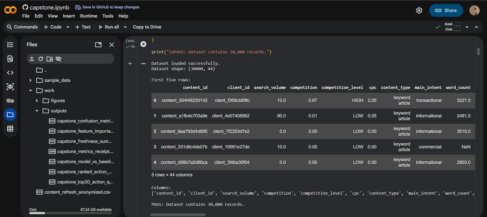
Inspect
Understand the available observations, fields, and data structure before modeling.
Filter
Exclude information that is inappropriate for the public research presentation.
Prepare
Construct a modeling dataset appropriate for feature engineering and evaluation.
FEATURE DESIGN
Feature Engineering & Leakage Control
Feature engineering translates the raw analytical data into variables that a machine-learning model can use. The goal is not simply to maximize the number of available variables, but to construct features that represent information available at the time the prioritization decision would be made.
This makes feature selection a modeling decision as well as a data-quality decision.
Leakage is particularly important in trend-prediction tasks. A variable that directly or indirectly contains future information can make evaluation results look stronger than they would be in a real deployment scenario.
For this reason, potential target-revealing or evaluation-period information was excluded where applicable.
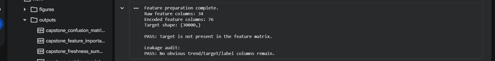
A model should only use information that would realistically be available when the prioritization decision is made.
REFERENCE MODEL
Baseline
A baseline establishes the reference point for model evaluation. Without a baseline, a model's metric has limited meaning because there is no indication of how much value the additional modeling complexity provides.
The baseline output is evaluated using the same general evaluation framework applied to the trained model. This keeps the comparison more meaningful because differences in performance are not simply caused by different evaluation conditions.
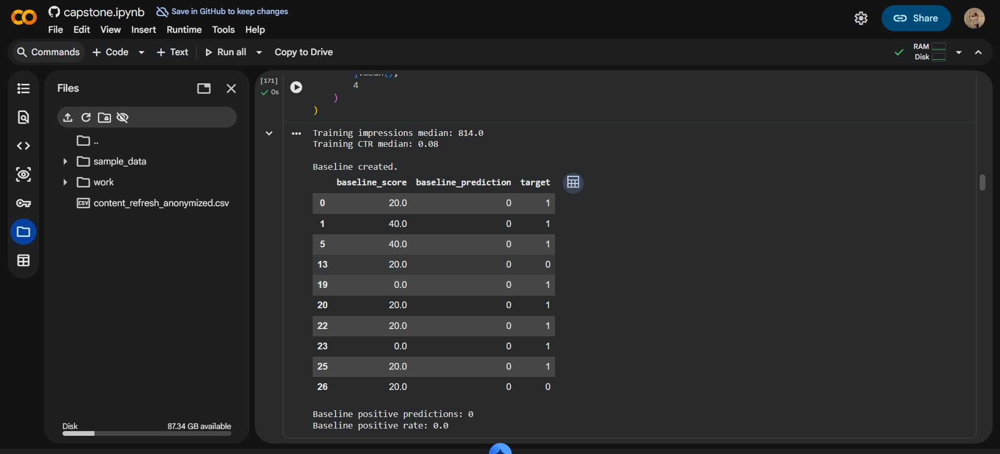
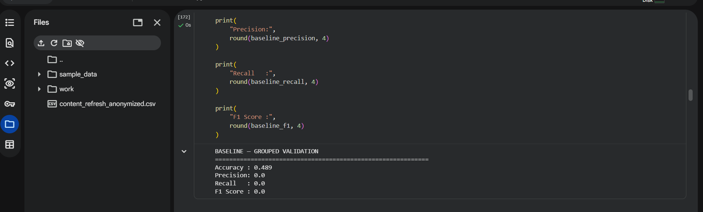
The baseline is not intended to be the final solution. It acts as the reference condition against which the additional predictive structure of the machine-learning approach can be assessed.
MODEL DEVELOPMENT
Methodology
After data preparation and feature selection, the selected variables were passed into the machine-learning workflow. The modeling stage transforms the prepared observations into a predictive representation of the target trend.
The model is evaluated against a held-out evaluation framework rather than only against its training output. This is important because strong performance on training observations alone does not demonstrate generalization.
The final pipeline connects four major stages: data preparation, feature construction, model training, and evaluation. The output is then passed into a prioritization layer that translates model predictions into actionable review ordering.
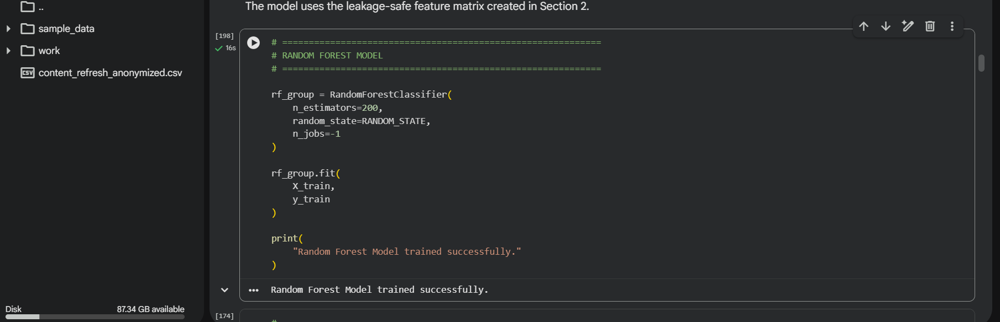
Research Question
Identify webpages that should receive review priority based on observed search-performance trends.
Target
Observed search-performance trend direction used as the modeling target.
Validation
Evaluate the trained model on information separated from model fitting and compare it against the baseline.
Final Output
Convert model predictions into ranked content opportunities for human review.
MODEL EVALUATION
Results
The final model was evaluated using the same evaluation framework used for the baseline. The figures in this section document the evaluation outputs generated by the modeling workflow.
Rather than relying on a single number, the evaluation is considered from multiple perspectives. Aggregate evaluation metrics provide a high-level view of performance, while the confusion matrix and error-analysis outputs help reveal where predictions align with or differ from the observed target.
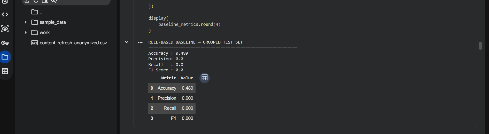
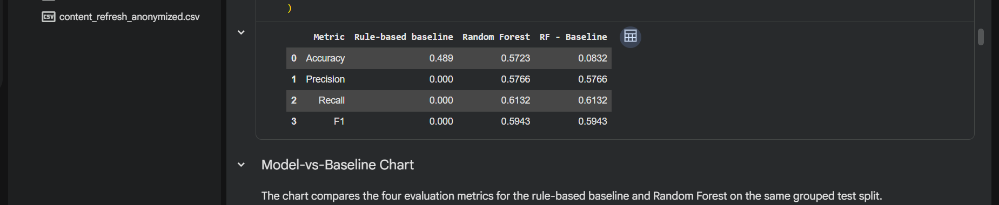
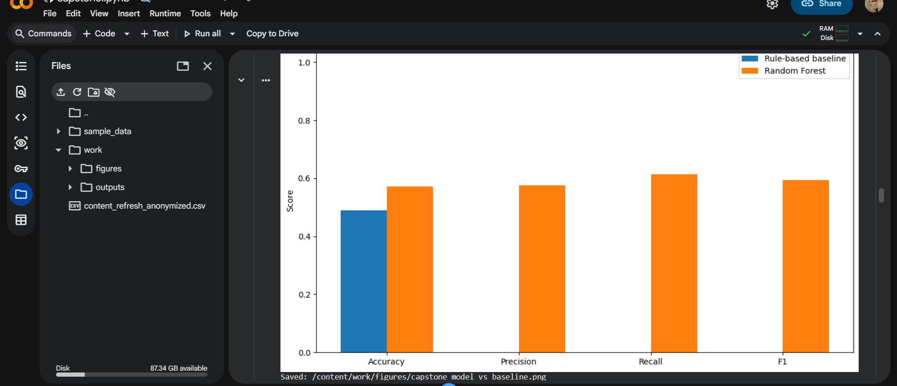
Understanding model mistakes
Aggregate performance does not explain every model decision. Error analysis therefore provides a second layer of evaluation by examining the distribution of correct and incorrect predictions. This is especially relevant for a prioritization system because different types of prediction errors may lead to different review priorities.
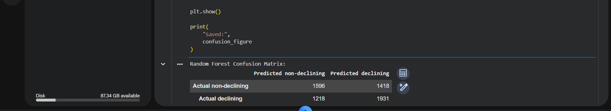
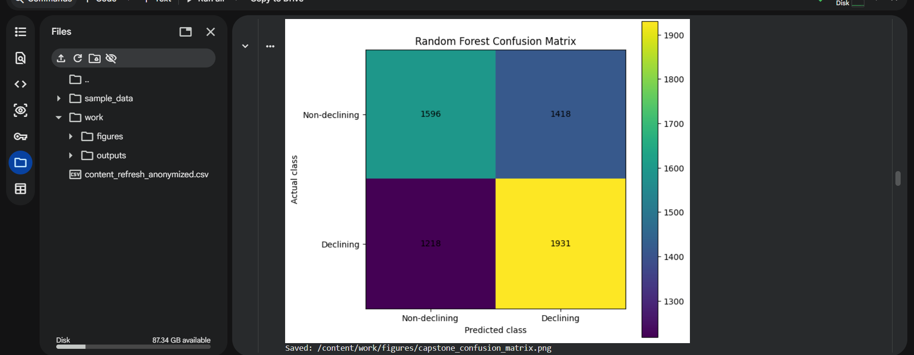
MODEL INTERPRETATION
Feature Importance
Feature importance provides a model-level view of which inputs contributed most strongly to the learned predictions. This can make the model easier to inspect and can help analysts understand which available signals deserve attention when reviewing a prediction.
However, importance should not be confused with causality. A feature receiving high model importance means that it was useful within the learned predictive relationship. It does not demonstrate that changing that feature will cause a change in Google search performance.
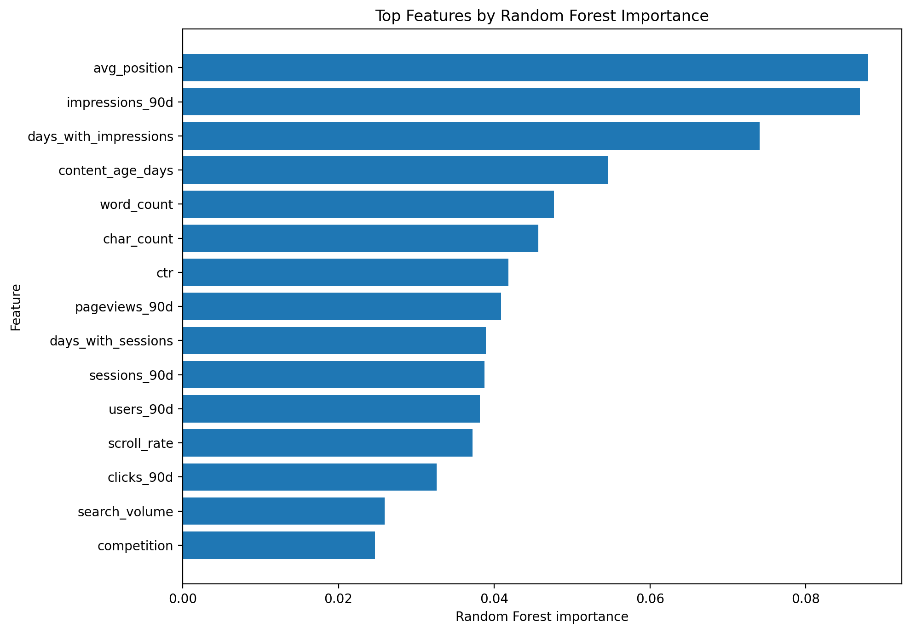
Predictive importance is evidence about the model's behavior, not evidence about Google's ranking mechanism.
DECISION SUPPORT
Ranked Recommendations
The final stage converts model predictions into a prioritization workflow. Instead of presenting the model output as a raw classification result, the predictions are organized so that analysts can investigate higher-priority observations first.
This creates a practical bridge between machine-learning output and content operations. The model does not replace editorial judgment; it helps determine where that judgment can be applied first.
From model predictions to content-prioritization evidence
Select any figure to inspect the full-resolution output.
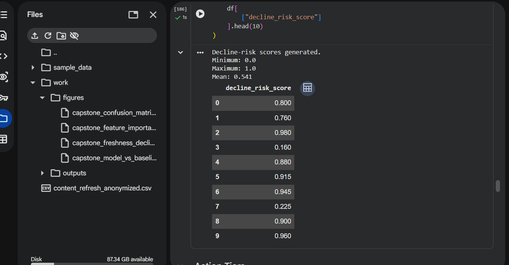
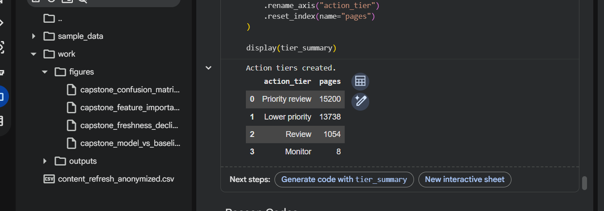
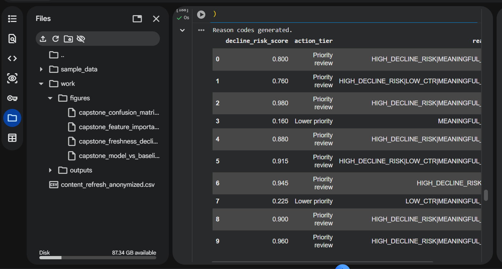
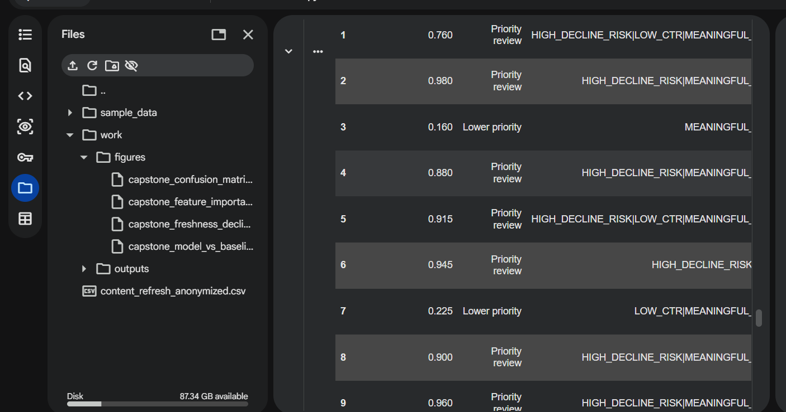
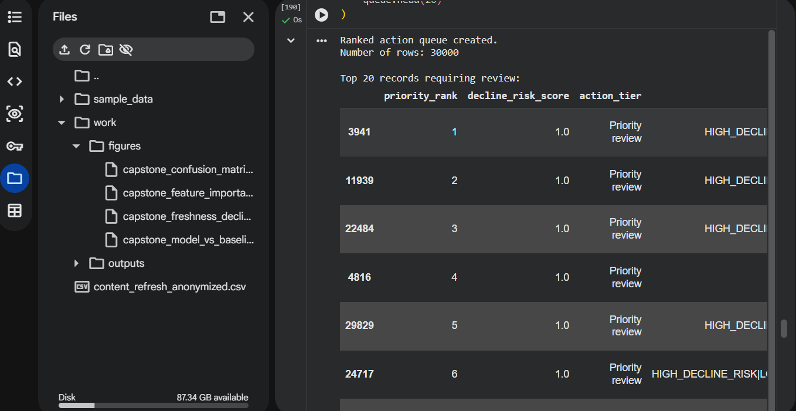
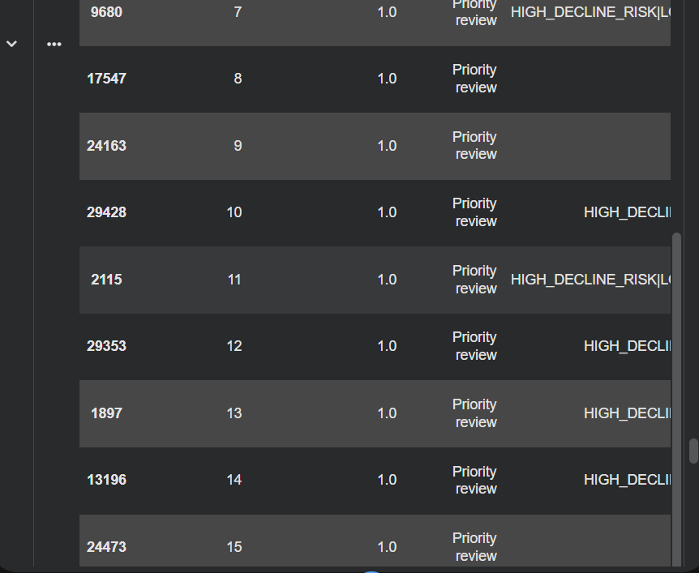
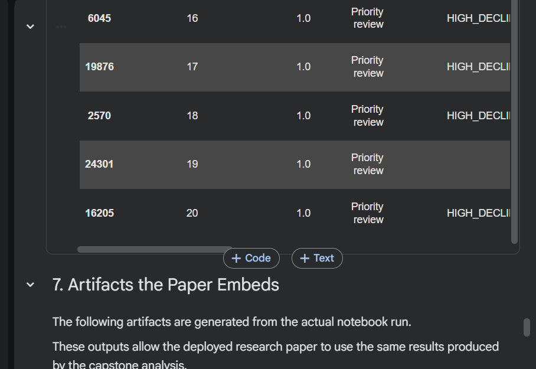
How the ranked output should be used
Review high-priority opportunities
Begin investigation with the observations receiving the strongest prioritization signal.
Inspect supporting signals
Examine the available feature evidence and model context before deciding whether further investigation is warranted.
Apply human judgment
Treat the model as decision support rather than an automatic content-editing system.
Monitor subsequent observations
Reassess the prioritization as additional search-performance observations become available.
HONEST FRAMING
Limitations
The usefulness of a machine-learning model depends on how its outputs are interpreted. The following limitations define the boundaries of the claims that can reasonably be made from this analysis.
Not causal evidence
The model identifies patterns in the available data. It does not establish causal effects on Google's ranking system.
Directional signal
Predictions should be interpreted as directional decision-support signals rather than guaranteed outcomes.
Model-specific importance
Feature importance describes the learned model relationship and should not be treated as proof of a ranking mechanism.
Human review required
Model recommendations should be reviewed before any content changes are considered.
Distribution changes
Model behavior may change when applied to different periods, datasets, or content populations.
Data constraints
The analysis is bounded by the variables, observations, and data quality available in the internship dataset.
RESEARCH TRANSPARENCY
Reproducibility
Reproducibility connects the public research paper to the computational workflow that produced its evidence.
The capstone notebook contains the data-processing, feature-engineering, modeling, evaluation, and final prioritization workflow.
The final notebook execution was captured as evidence that the workflow completed successfully and produced the outputs referenced throughout this paper.

DATA CREDIT
Acknowledgments
FlyRank Machine Learning Internship
Built on the FlyRank ML Internship dataset.
This project was completed as part of the FlyRank Machine Learning Internship. The public presentation follows the capstone's public-safety requirements and intentionally avoids publishing client names, private queries, credentials, raw exports, or claims that establish Google's ranking algorithm.
Visit FlyRank ↗